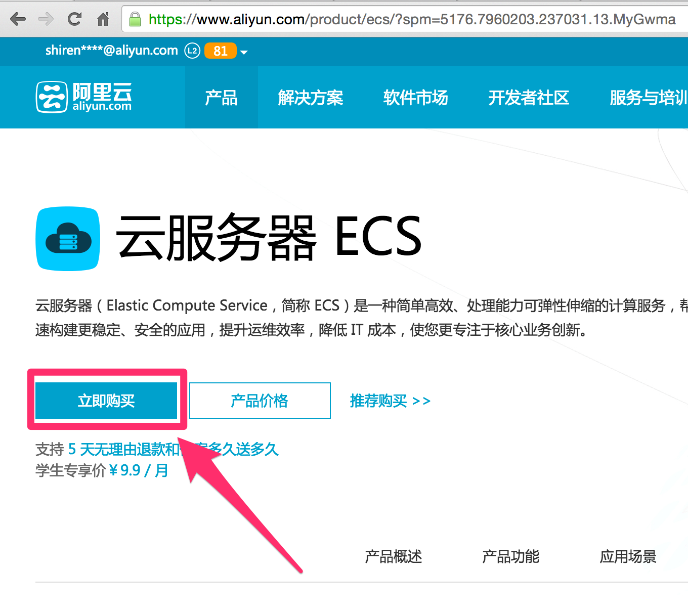
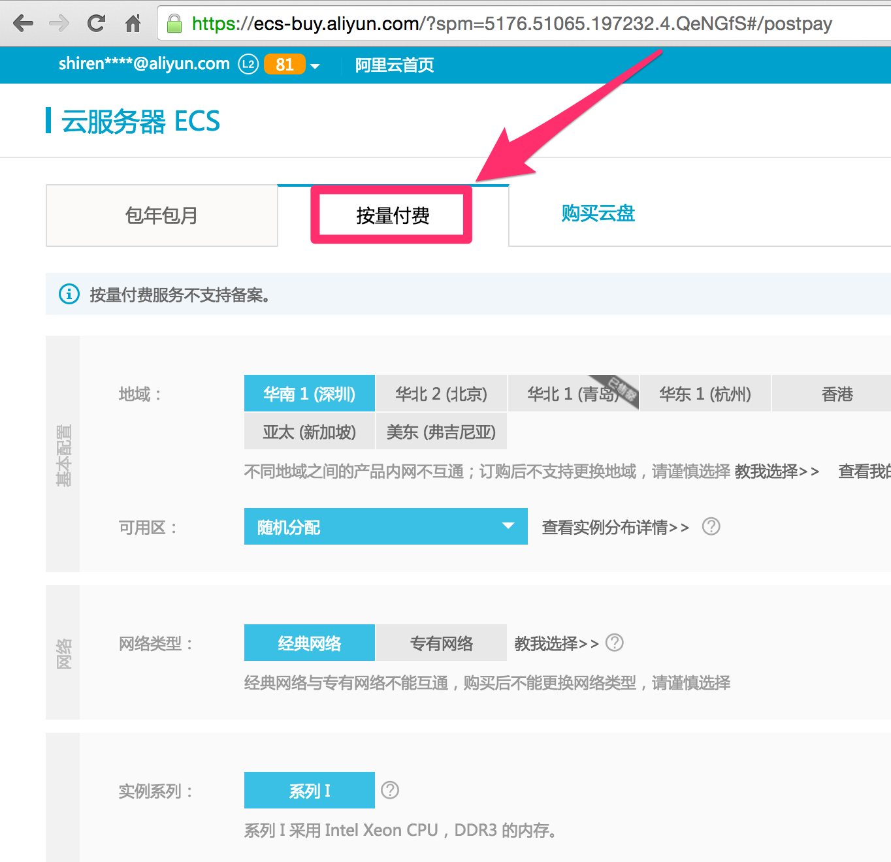
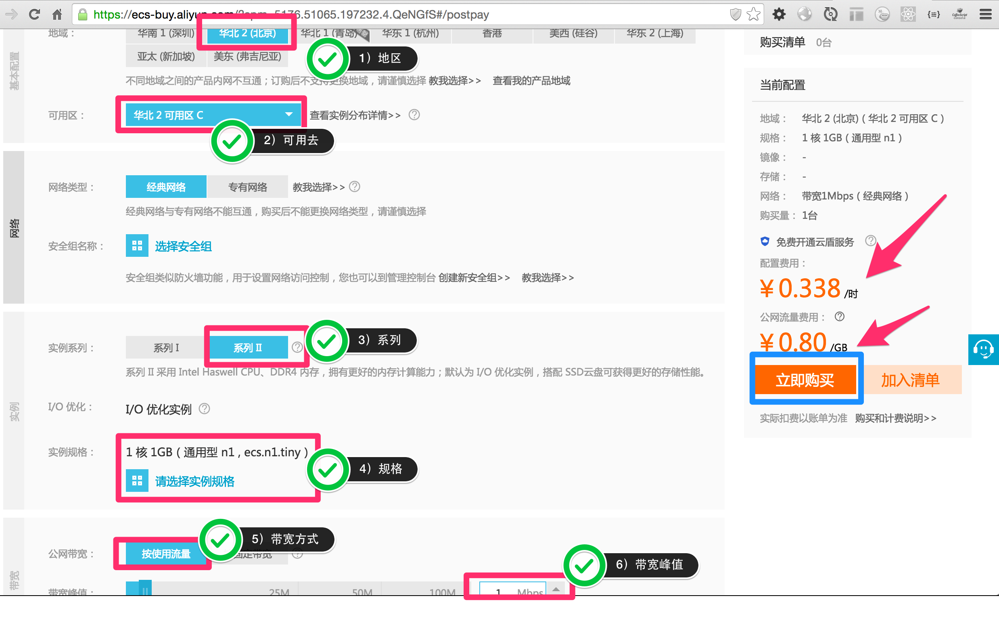
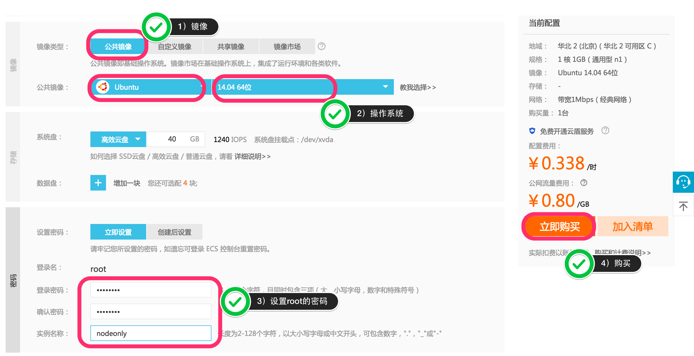

- Introduction
- 1. Nodejs入门
- 2. Koa入门
- 3. Koa进阶
-
4.
Koa与数据库
- 4.1. mongodb安装
- 4.2. 了解mvc里m的作用，以及什么样的代码该放到模型里
- 4.3. mongoose入门
- 4.4. 扩展mongoose模型statics方法和methods的区别
- 4.5. 虚拟属性
- 4.6. 回调：pre和post的差别
- 4.7. mongoose的插件机制
- 4.8. mongoose+promise
- 4.9. mongoosedao
- 4.10. 分页
- 4.11. 关系（1对1，1对多）在mongoose里如何实现
- 4.12. AGGREGATION 关联
- 4.13. 了解索引
- 4.14. 了解优化
- 4.15. mongooseconnection
- 4.16. 了解mongodb的部署与部署
- 4.17. UserModel
- 4.18. 随堂练习：完善用户注册、登录、管理
- 5. 项目实战
-
6.
部署
- 6.1. 购买
- 6.2. 创建
- 6.3. 安装必备软件
- 6.4. 安装node
- 6.5. Mongodb部署
- 6.6. 代码部署
- 6.7. pm2
- 6.8. 监控
- Published with GitBook
购买阿里云
购买3毛4分一小时的阿里云，用来学习linux服务器部署
购买原则
- 如果是短时间学习按需合算，如果长时间是包月合算，另外如果有虚拟机用虚拟机
- 设置自动释放，不用的时候自动销毁，提前做好计划，我要玩啥，计划个时间，学不会就自动释放，强迫自己快速学习
- 如果是大规模测试，其实这种按需的还是有他的优势的，测试并发，高可用非常好的
注册阿里云账户并登陆
https://account.aliyun.com/login/login.htm?oauth_callback=https%3A%2F%2Fwww.aliyun.com%2F
这步就不讲了，实在不会我也真教不了
选择ECS服务器
云服务器（Elastic Compute Service，简称 ECS）是一种简单高效、处理能力可弹性伸缩的计算服务，帮助您快速构建更稳定、安全的应用，提升运维效率，降低 IT 成本，使您更专注于核心业务创新
位置
产品->弹性计算->云服务器ECS

点击立即购买

选择按量付费
阿里云有2种购买方式，1是包年包月，2是按量付费。包年包月最少是1个月，最少估计也要100元一个月，如果是为了学习其实不太划算，你把服务器停了，它也一样收你的钱，而按量付费是你开着机器，用了多久就收多久的使用费，就好比ktv一样。多说一点，很多公司为了压测，也会购买大量的按需付费的机器，测试完了都释放掉，成本非常低
一定要记得选【按量付费】

如何选择最便宜的机器？
能影响价钱的有几个大的方面注意一下就可以，比如cpu和内存，阿里云最小的是1核1G内存，最便宜配置如下
- 地区：华北2（可用c区）
- 通用型 n1
- 实例系列：系列2
- 实例规格：1 核 1GB（通用型 n1 , ecs.n1.tiny）
- 公网带宽：按需使用流量
- 带宽峰值：1 Mbps

选择操作系统，设置root用户密码

点击立即购买即可
价格是0.338元/每小时,就是3毛4分一小时，估计大家都买得起的
另外就是公网流量费0.8元/G，你要有多少请求才能到1G啊，所以这部分在学习阶段不用care的。
大家可能还有的担心就是在服务器上装软件，这部分可能流浪很大，但是你可以使用阿里云内网的镜像啊，内网流量是不收费的，还快。。。
接下来，开始你的学习吧
- 玩转shell命令
- 玩转vi
- 安装git
- 安装node
- 安装nginx
- 使用pm2部署node代码
其实这之前还有如何连接服务器，创建用户等服务器必备操作，我们下次再讲